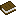
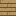
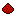
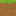
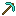
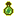
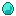
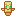
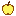
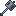

The visual language of Udeos Launcher: one set of tokens, a handful of
building blocks and a few firm rules. Everything on this page is rendered
with the same values as frontend/src/theme/tokens.css, so it
doubles as a live reference. Switch the theme at the top to compare Dark
(the reference) with Light.
The path from opening the launcher to playing is the shortest and most visible thing on every screen.
2. Waiting is a feature
Every download, install and start-up shows what is happening, how far along it is, and what the player can do meanwhile, right where it happens.
3. Casual by default, dense on demand
Nothing a child cannot understand on the surface; modder-grade control one step in.
4. Light on weak PCs
No blur, no gradients on surfaces, no hover transforms. Colour does the work.
5. Game-native, not gamer-loud
Real Minecraft textures supply the colour and charm; the chrome stays quiet and flat.
6. One blue action per view
Solid accent marks the single main action of a screen. Everything else is neutral.
Colour palette
A deep night-blue canvas (dark but never black), panels one step
lighter with blue-tinted hairlines, and a single blue accent. Three status
colours carry meaning: gold is working or slow on purpose, green is live,
red is failure. Values shown are for the active theme.
Surfaces and text
--color-bg
Canvas#0E1423 · #EEF3FC
--color-panel
Panel#161E2E · #FFFFFF
--color-panel-2
Panel inset#1F293C · #E8EEF9
--color-glass
Dialog sheet#18202F · #FFFFFF
--color-text
Text#ECF0F7 · #121A2B
--color-muted
Muted text#8E98AE · #586379
Accent and actions
--color-primary
Primary blue#336CEB · #2563EB
--color-primary-hover
Primary hover, blue text#4E86F8 · #1D4ED8
--color-feature
Feature tone#2B4F9E · #2A55B8
--color-secondary
Secondary#232D43 · #E2E9F6
--color-idle
Idle#1D2638 · #E6ECF7
--color-tag-gray
Neutral tag#27324A · #E4EAF5
Status
--color-green
LiveA game playing, a server on #5BE38A · #15803D
--color-green-soft
Version tag#1F4127 · #D6F0CF
--color-gold
WorkingSlow on purpose #F2B63D · #D9930F
--color-gold-soft
Loader tag#43381E · #F8E7BE
--color-error
Failure#E5566B · #C4344A
--color-error-soft
Error text#FF8794 · #D9485E
Themes
Dark (reference)
Night-blue canvas with two soft accent glows. The theme every screen is designed in first.
Light
Cool sky paper, white panels, the same blue one step deeper so white text on it still passes AA.
Custom
The player picks a light or dark base and one accent. utils/theme.ts derives every other token and checks contrast.

Typography
Three families, each with one job. Fonts are bundled with the app
(Fontsource) so the launcher looks the same offline.
Geist
Aa Play
Everything you read: headings, labels, body.
Geist Mono
1.21.1
Versions, sizes, addresses, console output.
Pixelify Sans
Udeos 64%
Only the wordmark and the big progress figure.
h1 · 44 / 800 / -0.04emYour Instances
h2 · 30 / 800 / -0.035emLast played
h3 · 20 / 700Library
h4 · 17 / 700Who can join
body · 14 / 400 / 1.5Each instance keeps its own worlds, mods, packs and settings.
small · 12.5 / muted3 to 16 letters, numbers or underscores.
tag · 11.5 / 6001.21.1
mono · 13udeoslauncher.friends-smp.nip.io:41234
display · 18 / 70064%
Headings use balanced wrapping and slight negative tracking. No eyebrow labels above headings. Bold is a lead, not decoration.
Shape and elevation
6 sm
10 md
16 lg
22 xl
pill
shadow-neu
shadow-pop
shadow-primary
Elevation is a hairline plus a short soft drop. No glow, no neumorphism. Small radii for chips and inputs, 16 px for panels and buttons, 22 px for dialogs.

Spacing and layout
Spacing scale (4 px base)
4
8
12
16
20
24
32
Card padding 20, grid gaps 16, page padding 24 to 32, section gaps 20 to 24.
Layout rules
Window: default 1180 by 760, minimum 960 by 640.
Sidebar 232 px; icon rail 68 px below 1000 px or when collapsed.
Split pages: a fixed 400 px side panel plus tabs; only the list under the tabs scrolls.
Rows never wrap: tab bars, tags and status lines truncate with a tooltip.
Cards in one grid share the same height.
Check every screen at 944 by 600 px of page, in English and Spanish.

Buttons
One component (atoms/Button.tsx), six variants, three sizes.
Labels are extra bold, padding is wider than tall, hover changes colour only.
Variant
Example
Use for
primary
Play
The one main action of a screen: Play, Create & play, Start, Save.
secondary
Manage
Raised neutral: Manage, Open, See options.
secondary quiet
Add
Card actions: neutral fill, blue glyph.
idle
Filters
Quiet fills, unselected options, toolbars.
ghost
Cancel
Hairline outline: Cancel, Later, minor actions.
danger
Delete
Destructive. Red tint at rest, solid red on hover.
inverse
Play
The main action on a feature surface.
Small 32Medium 44Large 52
InstallingCreateDisabled
Loading keeps the label and swaps the leading icon for a spinner. A disabled primary turns neutral instead of fading the blue.
Form controls
My World
CraftyFox
ab
Too short: 3 to 16 characters.
1.21.1 (latest)
Search…
CheckedUnchecked
Drop a file here, or browse
Tags and navigation
Tags

1.21.1FabricOptimizationIn use
Green-soft marks a version, gold-soft a loader, gray anything else. Always pills, always one line.Segmented controlVanillaWith modsFrom a modpackFor mutually exclusive options and the Addons type switch. Gives up padding, then truncates, never wraps.
Tabs
ModsResource packsWorldsSettings
Page-level sections of an instance or server. The open tab is remembered per item.Sidebar item
Instances
Servers
Back row
Back to Addons
Surfaces and cards
panelCards, forms, side panels. Hover brightens the fill and draws an accent edge; it never moves.
panel-featureThe one card to find first: a running server. Flat muted accent, no gradient, content in on-feature colours.
1.21.1Vanilla
glassDialogs, popovers and notices: an opaque raised sheet with a deep shadow. No blur.
Instance card

Modded Fun
1.20.1Forge
12 mods · 1 worldPlay
Empty state
No worlds yetPlay once to make one, or import a world you saved.Import world

Loaders and progress
Every wait shows where it happens. Measured work gets a filled bar, unmeasurable
work a sliding segment, slow-but-expected work turns gold, loading lists get skeletons of
their own shape.
Measured
Indeterminate
Slow on purpose
The bar is scaled, never transitioned: it updates every frame.
Launch strip
Downloading the game42%
Playing chip
Playing · 12 minClose game
Block hop (AutoLoader)
Button spinner
Live dot
Skeleton rows
Sodium added
to Fabric Fun
Connection lost
Could not reach Modrinth.
Removed CreateUndo
Notices: a success clears itself, an error stays until read, an undo lasts five seconds.

Iconography
Pixel items


Real 16 by 16 Minecraft textures, drawn pixelated at any size. They are instance icons, heading marks, stat icons, empty-state props and the faint canvas decoration. Item sprites only for decoration: full block faces read as missing images.
Line icons
2 px stroke, round caps, 16 to 20 px. Used for actions and navigation, always next to a text label.Logo

Udeos Launcher
An ender pearl with a mace rotated -45 degrees, and the Pixelify wordmark.
Motion
Token or animation
Value
Where
Easing
cubic-bezier(0.16, 1, 0.3, 1)
Everything: exponential ease-out, things arrive fast and settle.
State duration
160 ms
Hover and press colour changes.
block-hop
0.9 s loop
The loader block and the launch strip icon.
item-drop
once
An item falling into an empty list; the Create page icon.
live-ring
1.6 s loop
The green dot of a game or server that is on.
nudge
once
An error arriving, so it is noticed.
bar-slide, shimmer
loop
Indeterminate bars and skeletons.
No entrance fades on pages, cards, dialogs or popovers (they replayed on every navigation and WebKitGTK flashed on them). No hover transforms or will-change. prefers-reduced-motion stops hops, drops and nudges.
Voice and copy
How it sounds
Friendly, short and concrete. Written for a twelve-year-old, never talking down to a modder. Verbs on buttons (Play, Add, Start). English and Spanish, with room for Spanish to run longer.
Errors
A one to three word headline (Connection lost, Incompatible mod, Rate limited) and the reason underneath. The only technical detail shown is a log path, so an adult can help.
Do and don't
Do
Keep one solid blue action per screen.
Show progress on the card or page where the work belongs.
Use pixel items for charm in moments: empty, loading, playing, done.
Let a whole card be the click target through a stretched real button.
Offer Undo for small removals; confirm only what cannot be recovered.
Put Delete at the bottom of Settings, away from Play.